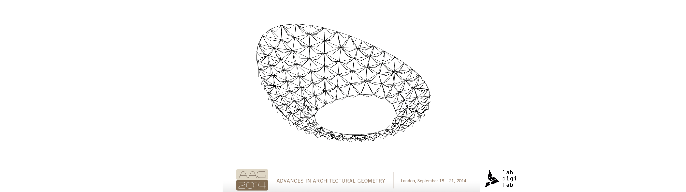

Teaching

Teaching Courses at Universities
2021 - Assitant professor Wroclaw University of Science and Technology, Department of Architecture, course "Parametric Modelling"
2020 - Lecturer Structural Engineering BT2, BTU Cottbus, Fakultät 6 Digitales Entwerfen, Cottbus, DE
2017 - Lecturer Universität der Künste BerlinUniversität der Künste Berlin, Berlin Area, Germany I was teaching a semester-long Grasshopper-based course "Interactive- Interaction-design". The course content was focused on paper folding simulations with Kangaroo 2 and their physical conterparts.
2015 - Adjunct/ Tutor Victoria University of Wellington School of Architecture and Design, Wellington & Wairarapa, New Zealand, tutoring Design Communication Course (SARC261), tutoring parametric design workshops;
University: Victoria University of Wellington Duration: 1 trimester (Trimester 2) 13.07.2015 - 30.10.2015 Department: School of Architecture and Design Course: SARC 261 Communication Program: 200-level (Undergraduate, 2nd year) Number of students: 20 Responsibilities: preparation of the program – Rhino/Grasshopper, conduction of the classes, consultations on projects, marking
University: Victoria University of Wellington Duration: 1 trimester (Trimester 2) 13.07.2015 - 30.10.2015 Department: School of Architecture and Design Course: ARCI 412 ARCHITECTURE DESIGN RESEARCH Program: 400- level (Graduate, 4th year) Number of students: 20 Responsibilities: leading workshop – part of the course program, preparation of the workshop content, consultation on projects, final review of the projects, giving seminars
2014-2015 - Assistant/Tutor University: Wroclaw University of Technology Duration: 1 semester (winter term 2014/2015) 1.30.2014-15.02.2015 Department: Faculty of Architecture Course: Advanced 2D and 3D Design Tools in Spatial Planning Program: Graduate (5th year) Number of students: 25 Responsibilities: introduction for students to Rhino/
Leadership of workshops at international conferences

AMERICAN ASSOCIATION OF COMPUTER AIDED DESIGN IN ARCHITECTURE (ACADIA 2018),Recalibration of Architectural Design Optimization, 14/10/2018, Mexico City, MX

COMPUTER-AIDED ARCHITECTURAL DESIGN RESEARCH IN ASIA (CAADRIA 2017),Workflows for Conceptual Architectural Design Optimisation (ADO), 03-04/04/2017, Xi'an JiaotongLiverpool University, Suzhou, CN

INTERNATIONAL ASSOCIATION OF SPATIAL STRUCTURES 2017 (IASS 2017), Interfacing Architecture, Engineering and Mathematical Optimization, 24/09/2017, Hamburg, DE

ADVANCES IN ARCHITECTURAL GEOMETRY 2016 (AAG 2016), Workshop 1: AJ GAME – From Digital Complexity to Physical Construction, 10-11/09/2016, ETH, Zurich, CH

SHAPES OF LOGIC 2015 (SOL 2015) Min- max structures, 7-11/03/2015, Wroclaw, PL

ADVANCES IN ARCHITECTURAL GEOMETRY 2014 (AAG 2014), Prototyping Optimization process in relation to solar analysis, 20/09/2014, UCL, London, GB
Other On-site Workshops
1. OPTIshell Workshop, 2-day workshop organized by Fab Foundation Poland, Fab Institute, 15-16/03/2024, Wroclaw, PL
1. Sprayed Robotic Structures Workshop, Workshop mit Tragwerksanalyse der Module, BTU Cottbus, 09/2019 (5 x 5 hours), Cottbus, DE
2. Optimization workshops as part of the Summer School Dresden, TU Dresden, led by: Judyta Cichocka, 20/08/2017, Dresden, DE
3. Machine Learning workshops, organizing committee: Judyta Cichocka, moderator: Mateusz Zwierzycki, 06-08/10/2017 (3 days), TU Center of Entrepreneurship, Berlin, DE
4. Canopy structural optimization workshop, organizing committee: Judyta Cichocka, Jan Pernecky (ReseArch), moderator: Judyta Cichocka, 14/01/2017 (1 day), online webinar
5. Winter School 2016 workshop - Zakopane 2016, organizing committee: Judyta Cichocka, Adrian Krężlik, form of participation: co-organizer and workshop leader, 28/02-01/03/2016 (3 days), Zakopane, PL
6. OPTIwaw 2016 workshop, organizing committee: Judyta Cichocka, Adrian Krężlik, form of participation: co-organizer and workshop leader, 21-22/05/2016 (2 days), Business and Conference Center, Ogrodowa 58, Warsaw, PL
7. Grasshopper Master Class for ARCI-412, organizing committee: Judyta Cichocka, Derek Kawiti, 1-2/08/2014 (2 days), Victoria University of Technology, School of Architecture, lab 319, Wellington, NZ
8. Advance Grasshopper Masterclass for Master Thesis Students, organizing committee: Derek Kawiti, Judyta Cichocka, form of participation: co-organizer and workshop leader, 16/08/2015 (1 day), Victoria University of Technology, Wellington, NZ
9. Parametric design workshop Course 2: Intermediate level + physical simulations, Organizing committee: Judyta Cichocka, Piotr Halczuk, 18-19/10/2014 (2 days), Biskupia 10/2, Kraków, PL
10. Parametric design workshops Course 1: Basic level + optimization, Organizing committee: Judyta Cichocka, Piotr Halczuk, 11-12/10/2014 (2 days), Św.Filipa 23/6, Kraków, PL
11. Parametric Design in Rhino/Grasshopper3d for architecture: Undergraduate, Faculty of Architecture, Irkutsk State Technical University, 24/10/2014-05/11/2014 (2 weeks), Irkutsk, RU
11. Generative forms in art and architecture, Lower Silesian Science Festival 2014, organizing committee: Judyta Cichocka, Jakub Ławicki, 23-24/09/2014 (2 days), C13, Wrocław University of Science and Technology, Wrocław, PL
12. Code of Space parametric design course - Wrocław: Course 2 - intermediate level + solar optimization, organizing committee: Judyta Cichocka, co-organizers: Mateusz Zwierzycki (Poznań University of Technology), 3D-UP company, media patrons: 3DD Dreaming, 12-14/09/ 2014 (3 days), Krzywy Komin Professional Development Center, Wrocław, PL
13. Code of Space parametric design course - Wrocław: 1-basic level course, organizing committee: Judyta Cichocka, co-organizers: Mateusz Zwierzycki (Poznań University of Technology), 3D-UP company, media patrons: 3DD Dreaming, 5-7/09/2014 (3 days) ), Krzywy Komin Professional Development Center, Wrocław, PL
14. 3D Printing training, organizing committee: KN LabDigiFab, Bolesław Telesiński, Judyta Cichocka, 5/11/2013 (1 day), Wrocław University of Science and Technology, Faculty of Architecture, Building E-5, room 8, Wrocław, PL
15. Parametric design workshops - basic level + optimization, organizing committee: Judyta Cichocka, Marta Pakowska, Mateusz Olczyk, 15/11/2013-17/11/2013 (3 days), Wrocław University of Science and Technology, Faculty of Architecture, Wrocław, PL
Online Trainings
Karamba 101: Introduction to Parametric Engineering link
Karamba 102: - Optimizzation of concrete shells and form finding techniques. link
ARX.ace - Optimization: CANOPY STRUCTURE OPTIMIZATION link
Supervising and mentoring
I was for many years an official supervisor of the research group LabDigiFab at Wroclaw University of Technology and Science. Between 2016 and 2018 I was Young Talent Architecture Award (YTAA) Representative for the Faculty of Architecture at Wroclaw University of Science and Technology. One of the nominated by me projects S’lowtecture: housing structure by Tomasz Broma won in the completion and was presented at 15th International Architecture Exhibition– La Biennale di Venezia.